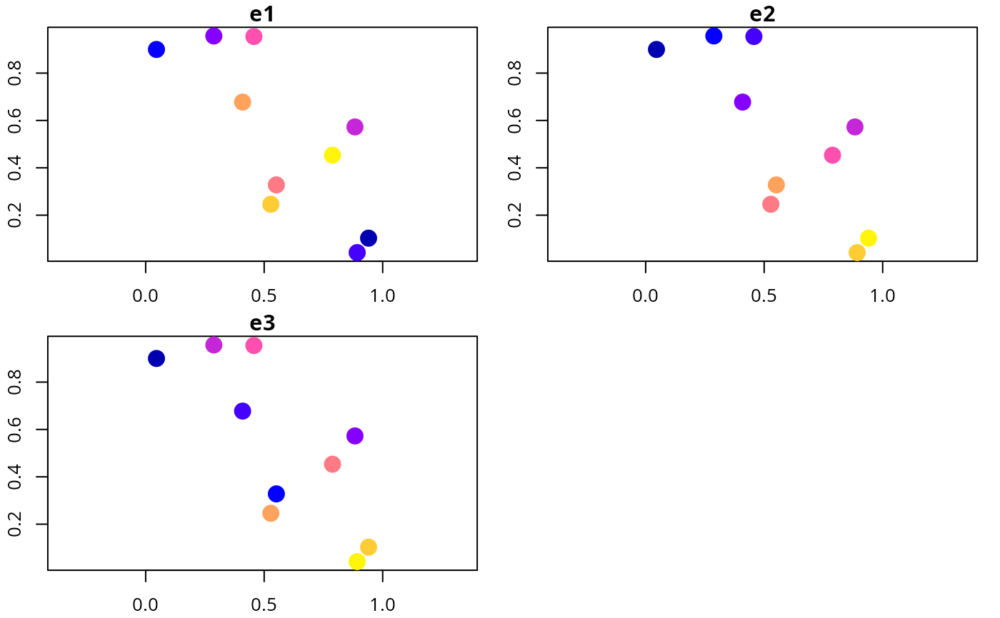
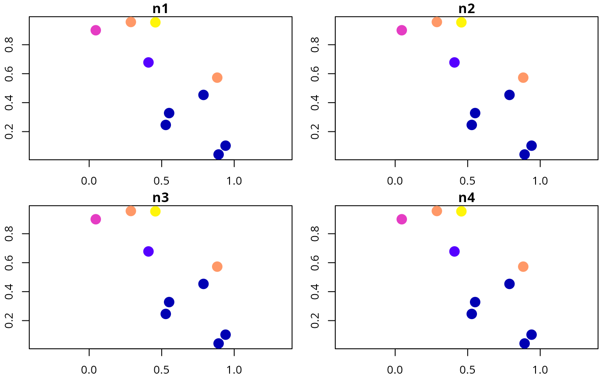

Simulate site data for developing simulated survey schemes.
simulate_site_data(n_sites, n_features, proportion_of_sites_missing_data, n_env_vars = 3, survey_cost_intensity = 10, survey_cost_radius = 0.5, management_cost_intensity = 100, management_cost_radius = 0.5, output_probabilities = TRUE)
Arguments
| n_sites |
|
|---|---|
| n_features |
|
| proportion_of_sites_missing_data |
|
| n_env_vars |
|
| survey_cost_intensity |
|
| survey_cost_radius |
|
| management_cost_intensity |
|
| management_cost_radius |
|
| output_probabilities |
|
Value
sf object with site data. Columns starting with
(i) "f" (e.g. f1) contain presence/absence data,
(ii) "p" (e.g. p1) contain prior probability data,
(iii) "e" (e.g. e1) contain environmental data. Note
that presence/absence and probability columns with the same integer suffix
correspond to the same feature (e.g. f1 and p1 are the
same feature).
Details
The data are simulated using random fields
(RFsimulate) to provide spatially auto-correlated
simulations.
See also
simulate_feature_data
Examples
# set seed for reproducibility set.seed(123) RandomFields::RFoptions(seed = 123) # simulate data d <- simulate_site_data(n_sites = 10, n_features = 4, prop = 0.5)#> ...#> Simple feature collection with 10 features and 13 fields #> geometry type: POINT #> dimension: XY #> bbox: xmin: 0.0455565 ymin: 0.04205953 xmax: 0.9404673 ymax: 0.9568333 #> epsg (SRID): NA #> proj4string: NA #> # A tibble: 10 x 14 #> survey_cost management_cost e1 e2 e3 f1 f2 f3 f4 #> <dbl> <dbl> <dbl> <dbl> <dbl> <dbl> <dbl> <dbl> <dbl> #> 1 6.63 64.0 -0.474 0.555 0.948 1 0 0 1 #> 2 4.34 69.0 -0.360 -1.21 -0.151 0 1 1 1 #> 3 7.01 62.8 0.493 0.632 1.01 1 0 0 1 #> 4 3.64 70.7 -0.801 -2.30 0.304 NA NA NA NA #> 5 3.42 70.1 -0.586 -0.0249 -1.49 0 1 0 0 #> 6 6.20 60.2 1.48 0.287 0.705 NA NA NA NA #> 7 3.65 66.9 1.30 0.960 -0.554 NA NA NA NA #> 8 5.06 68.7 -0.607 0.236 -1.60 0 1 0 0 #> 9 3.64 66.8 1.01 0.655 -0.310 NA NA NA NA #> 10 7.38 61.8 -1.46 0.213 1.14 NA NA NA NA #> # … with 5 more variables: p1 <dbl>, p2 <dbl>, p3 <dbl>, p4 <dbl>, #> # geometry <POINT># plot feature presence/absence data plot(d[, c("f1", "f2", "f3", "f4")], axes = TRUE, pch = 16, cex = 2)# plot feature probability data plot(d[, c("p1", "p2", "p3", "p4")], axes = TRUE, pch = 16, cex = 2)